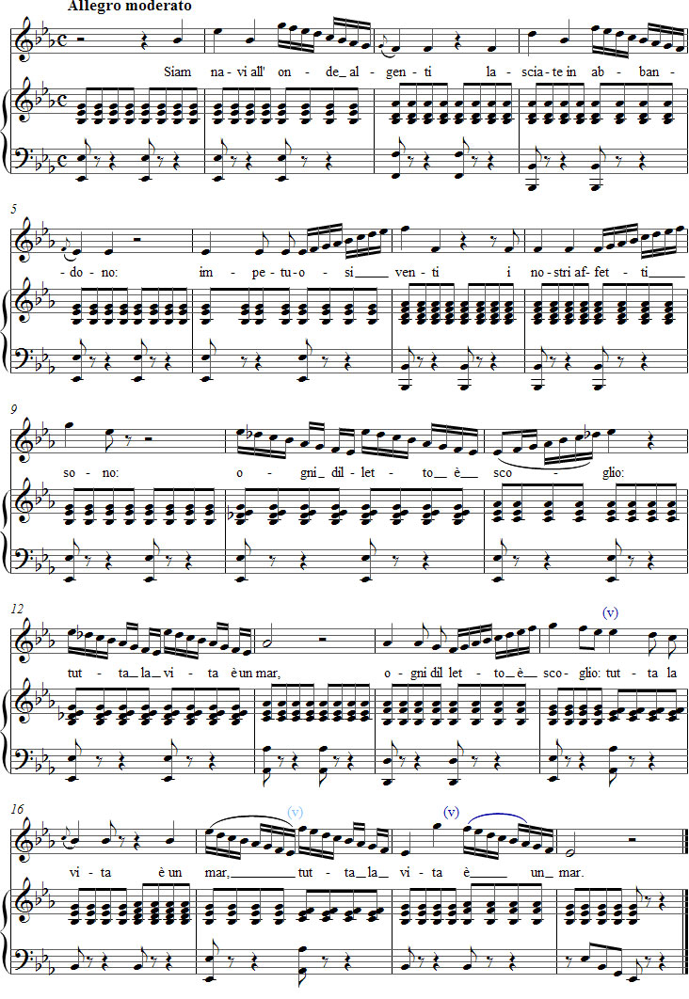

Vaccaj – Harjoitus 12
Kuuntele äänite
Nuotit

Tehtävä 12
[le vo'late]
Le volate
Juoksutuksia
['sjam 'navi all 'onde al'dʒɛnti]
Siam navi all' onde algenti
Olemme laivoja aalloilla jäätävillä
[laʃ'ʃate in abban'dono]
lasciate in abbandono:
jätettyinä hyljätyiksi.
[impetu'ozi 'vɛnti]
impetuosi venti
Rajuja tuulia
[i 'nɔstri af'fɛtti 'sono]
i nostri affetti sono:
meidän tunteemme ovat,
['oŋŋi di'lɛtto ɛ 'skɔʎʎo]
ogni diletto è scoglio:
jokainen ilo on karikko,
['tutta la 'vita ɛ un 'mar]
tutta la vita è un mar.
koko elämä on meri.
Olemme unohdukseen hyljättyjä
laivoja jäätävillä aalloilla.
Tunteemme ovat rajuja tuulia.
Jokainen ilo on karikko.
Koko elämä on meri.
laivoja jäätävillä aalloilla.
Tunteemme ovat rajuja tuulia.
Jokainen ilo on karikko.
Koko elämä on meri.